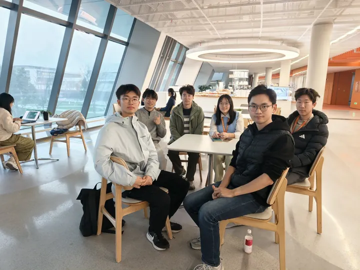
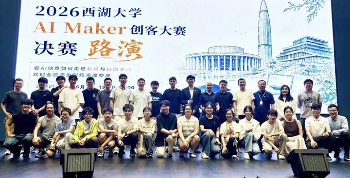

AI INTERDISCIPLINARY SCIENCE CLUB
让 AI，
跨越学科的边界。
我们是西湖大学 AI交叉科学社。
从科研中的一个问题，到生活中的一次灵感，
让不同领域的人，在这里交换视角、一起探索。
OPEN MINDS.SHARED QUESTIONS.NEW POSSIBILITIES.
FIG. 01 / CONNECTING DISCIPLINESAI × SCIENCE × PEOPLE

交叉的起点，
是一次对话。REAL PEOPLE.
REAL CONVERSATIONS.
是一次对话。REAL PEOPLE.
REAL CONVERSATIONS.
01 / QUESTIONS WORTH SHARING
最近，我们在讨论Weekly conversations

2026.06.07 / AI MAKER COMPETITION首届西湖大学 AI Maker 创客大赛
03 / AN OPEN COMMUNITY
不同的学科。
共同的好奇心。
AI交叉科学社是西湖大学的跨学科学生社团。我们围绕人工智能前沿、AI 与科研、教育、工具实践，以及人机关系与社会影响，持续开展专题讨论与交流。
你可以带着技术问题来，也可以带着对 AI 时代的困惑来。一个领域的常识，也许正是另一个领域需要的启发。
了解我们的社群